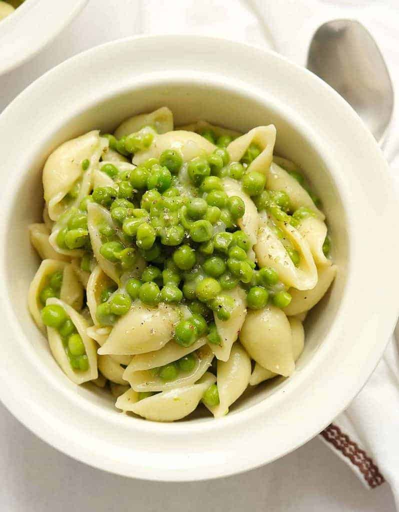

Pasta With Peas

Description
The following is a description from: the original recipe's website
This creamy quick pasta with peas is a simple and super easy delicious one-pot dinner recipe that uses minimal ingredients. It's the perfect midweek meal, it's ready in 15 minutes and tastes so delicious!
Ingredients
- 1 lb (450 grams) Peas, fresh or frozen
- 1/2 lb (220 grams Short shaped pasta (shells, elbows, ditaloni...)
- 1/2 cup (50 grams) grated parmesan cheese, plus more to serve
- 2 cups (500 ml) vegetable broth or water, plus more if needed
- 1 small onion, diced
- 1 Tbsp olive oil, plus more for drizzling
- salt & pepper, to taste
Steps
- Warm the olive oil in a large pot over medium heat. Add the diced onion and cook until the onion has softened and is turning translucent, about 5 minutes.
- Add the peas and cook stirring frequently about 1 minute.
- Then add vegetable broth (or water), raise the heat, bring to a boil and stir in pasta and salt (I use 1 tsp of salt and then I adjust the seasoning at the end).
- Reduce the heat, cover with a lid, and cook your pasta in the starchy water. During the cooking time, you need to stir often until the water is absorbed, otherwise, it will stick to the bottom. The water should barely cover the pasta, but it's fine, add extra water gradually only if needed.
- Cook until ready but firm to the bite. Turn off the heat and stir in freshly grated parmesan cheese until melted. Taste and adjust the seasoning.
- Serve immediately with a drizzle of olive oil, black pepper, and extra parmesan cheese if you like. Enjoy!